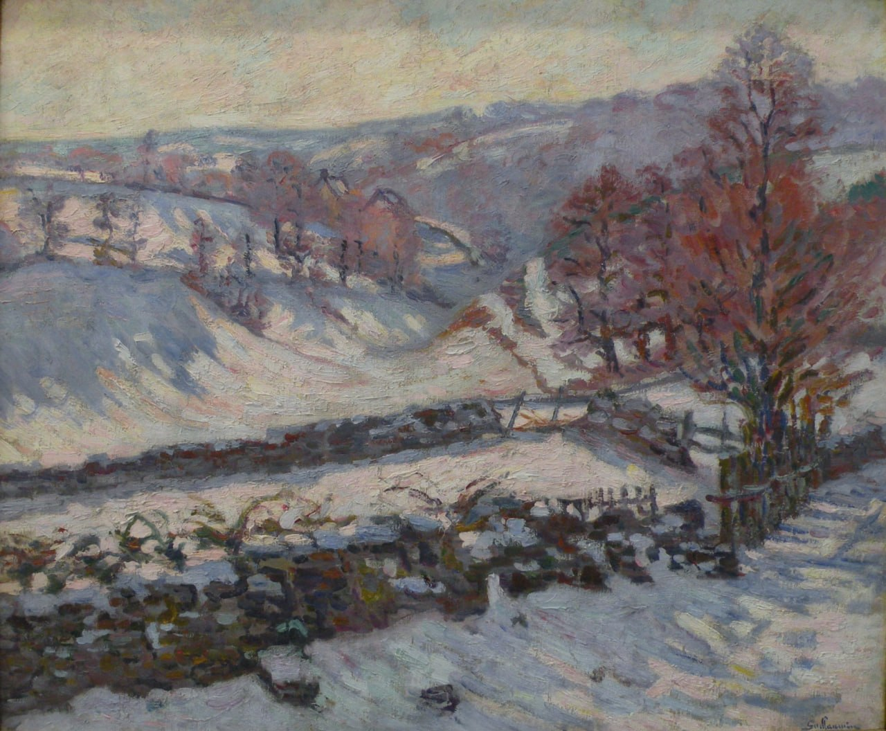

Жан-Батист Арман Гийомен
Paysage de neige à Crozant (Снежный пейзаж в Крозанте), 1895

Холст, масло, 60 x 73 см
Музей современного искусства Андре Мальро, Гавр.
Происхождение
Расположенный вдали от Парижа, суровый и негостеприимный край с жестокими зимами, регион Крёз начал украшать стены парижских салонов с 1830 года. Жорж Санд, чьи романы о сельской жизни способствовали популяризации этого региона, привлекает в Ноан первых художников-пленэристов. Затем, примерно 50 лет спустя, мрачный Роллина, как его прозвали друзья, пригласил Моне в своё поместье в Крёзе, куда он уехал, чтобы уединиться. Нормандский художник жил во Фреслине с марта по май 1889 года, но проклинал климат, который заставлял его постоянно переделывать свои полотна: «Никогда у меня не было такой неудачи с погодой. Ни разу не было трёх благоприятных дней подряд, так что я вынужден постоянно вносить изменения, потому что всё растёт и зеленеет! Короче говоря, посредством постоянных трансформаций я следую за природой, не в силах её постичь, и вот эта река, которая приливает и отливает, сегодня зелёная, завтра жёлтая». Когда три года спустя Гийомен последовал примеру Моне, его крепкий характер также столкнулся лицом к лицу с рекой Крёз. И он заявил: «Я всегда считал, что Крозан — не место для начинающего художника». Но художник был целеустремлённым, стремящимся овладеть своим предметом и раскрыть его полную истину. Человек, который был всего лишь художником-любителем, а счастливый жребий лотерейного билета превратил его в профессионального художника, провёл большую часть своей жизни в Крозанте с 1892 по 1924 год. Хотя он писал каждый день, независимо от времени года, любители особенно ценят его зимние пейзажи, иней, которые принесли ему настоящий триумф на большой выставке, посвященной ему Дюран-Рюэлем в 1894 году, на которой было представлено не менее ста полотен и пастелей. Сквозь сверкающую завесу инея или снега Арман Гийомен умудряется заставить цвета пульсировать с яркой интенсивностью. Его "Paysage de neige à Crozant" изображает холмистые долины, подчёркнутые синими, сиреневыми и лиловыми тенями, которые, в свою очередь, уравновешиваются зелёными и жёлтыми оттенками под переливающимся небом. Это, доведённое до самых сокровенных пределов, применение импрессионистских теорий. Между "La Pie" Моне (Париж, Орсе) и "Paysage de neige à Crozant" нет ничего общего: робким и деликатным зарисовкам Моне о зимних ощущениях Гийомен противопоставляет многословную красноречивость, которая заключает солнечный спектр в глубины материи. Художник наносит на свой холст земную мощь этих древних, изъеденных эрозией гор и умеет, посредством густой пастозной живописи, передать суровость этих пейзажей и жестокость зимы. Как отмечает Christophe Rameix, встреча между регионом Крёз и Гийоменом — это тесная, почти физическая борьба. Художник охотно работает с пейзажем, не боясь рисковать: «Снег на яблонях развевается апрельским ветерком, когда он пишет весеннюю симфонию. Идёт дождь, когда он рисует летнюю грозу. У него обморожены пальцы, когда он запечатлевает под хлёстким порывом северного ветра нежные радужные отблески морозного утра». Для него живопись — это целенаправленный акт, который каждый день приводит его к выбранному сюжету. Так, холмистый пейзаж "Paysage de neige à Crozant", идеально идентифицированный как Grandes Gouttes, вновь появляется на его полотнах в разные времена года. Он написал её в яркой оранжевой палитре в марте 1902 года (Crozant, les Grandes Gouttes, pl. 34 dans Christopher Gray, Armand Guillaumin, Genève, 1972), в пасмурную погоду или под тонким слоем инея (Gelée blanche sur Crozant, Londres, Sotheby's : Impressionist and modern art and ceramics, 13 octobre 1993), а иногда и несколько раз в одном и том же месяце. Такое обилие работ на одну и ту же тему делает любую датировку очень сложной.